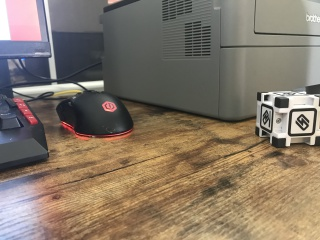
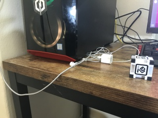
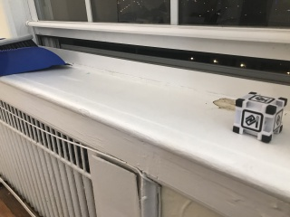
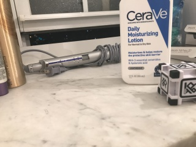
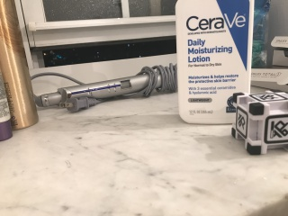
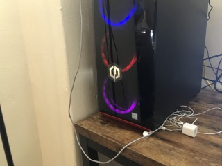
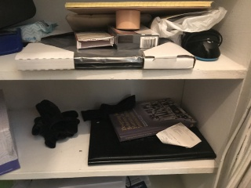
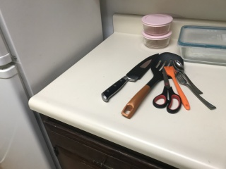
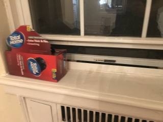

15-694 Cognitive Robotics Final Project
Partial Cube Detection
Instructor: Professor Dave Touretzky
[Course WebPage] [Project Instructions]1. Introduction
This page is about my final project from 15-694: Cognitive Robotics course at Carnegie Mellon University Computer Science Department that I took in Spring 2020 semester. The main goal of the project is to give the Cozmo robot an ability to detect the partial cube in his vision by using a deep learning, then turn to its direction so that Cozmo can see the full cube in its vision.
2. Robot and Software
At this project, I have used the Cozmo. Details of 'How does the Cozmo work?' can be found at here. Base code that operates the Cozmo for this project and this course can be found at here.
I use the OpenCV when I handle images
For the training and testing the partial cube detection, I used the PyTorch.
3. Data Collection
Even though the Professor Touretzky suggested collecting the image data by Cozmo's camera with his TakePictures.fsm code, I decided to collect the data by my smartphone (iPhone 7+) since placing Cozmo, checking his vision at computer, then taking picture requires much more labor and time than needed. However, data collected by Cozmo can be more exquisite, and more helpful for making better neural network. If time permits, I will try to collect the data by Cozmo, then compare the performance.
3.1 Training Data Images
All raw images, taken from the smart-phone, have 4032 pixels width, and 3024 pixels height. Thus, the aspect ratio of all raw images is 4 : 3.
These are some of my raw images with cubes.



 


These are some of my raw images with no cube.




3.2 Editing Raw Images to Cozmo's perspective
As I mentioned above, these images are taken by smart-phone camera instead of the Cozmo's camera. At testing, images directly taken from the Cozmo's camera will be an input image of the neural network. Thus, it is necessary to make our training images similar to image taken from the Cozmo.
This is how Cozmo sees the world with his camera. The width of the image is 320 pixels, and height of the image is 240 pixels. Thus, the aspect ratio is 4 : 3. Also, the image is in grayscale.

Fortunately, images from the Cozmo's camera has same aspect ratio as images from the smartphone. Thus, we only need to resize the image (divide both width and height with 12.6), then change RGB colors into grayscale.